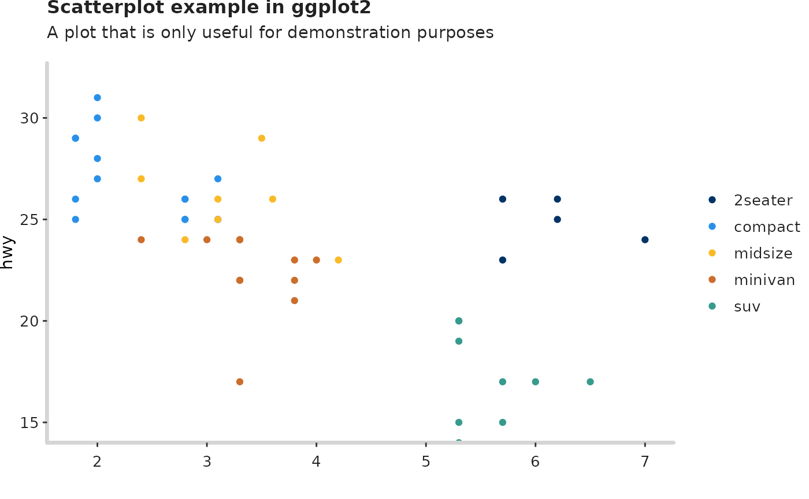

What is the ectrlplot package?
Stavrou Androniki
2019-07-11
my-vignette.RmdIntroduction
What is the ectrlplot package?
This is an R package, developed by the PRU team to make the process of creating publication-ready graphics in our in-house style, using R’s ggplot2 library, a more reproducible process.
The package is constisted of the following functions:
theme_pru()to add the PRU style in the ggplot2 graphicsadd_logo()to add the EUROCONTROL logo and the sourcepru_pal()to see the colour palette of the PRU teamscale_color_pru(),scale_colour_pru()&scale_fill_pru()to use the colour palette of the PRU team

Examples
The following examples will help you understand how to use ectrlplot package and its components step by step.
Example 1
Let’s start with a basic scatterplot example.
p1 <- ggplot(mtcars, aes(wt, mpg)) +
geom_point() +
labs(title = 'Scatterplot example in ggplot2',
subtitle = 'A plot that is only useful for demonstration purposes')
p1
Discrete color & fill scales based on the PRU palette
Use the PRU color palette by adding scale_color_pru(), scale_colour_pru() or scale_fill_pru().
library(scales)
p2 <- ggplot(mpg[1:48,], aes(displ, hwy, colour = class)) +
geom_point() +
theme_pru() +
scale_color_pru() +
labs(title = 'Scatterplot example in ggplot2',
subtitle = 'A plot that is only useful for demonstration purposes')
p2
Modify components of the theme_pru()
If you want to modify some components of the theme_pru(), use theme() and add your preferences. In this example, the Y axis line is added and the Y axis grid lines in the panel are removed.
See how to modify components of a theme.
p3 <- p2 + theme(axis.line.y = ggplot2::element_line(colour = "#D5D5D5",
size = 1.2,
linetype = "solid",
lineend = "round"),
panel.grid.major.y = ggplot2::element_blank())
p3
Add the logo
Finish the plot by adding the logo, the source and the filepath that you want it to be saved.
The EUROCONTROL logo is the default in this package. If you want to use your own logo, modify the function by adding the parameter logo_image_path.
add_logo(plot_name = p3,
source = "Source: My source",
save_filepath = "thisismyplot.png",
width_pixels = 640,
height_pixels = 450)
Example 2
Now, let’s see how to use the ectrlplot package in ggplot2 bar chart.
g1 <- ggplot(mpg[1:108,], aes(class)) +
geom_bar() +
labs(title = 'Bar chart example in ggplot2',
subtitle = 'A plot that is only useful for demonstration purposes')
g1

Discrete color & fill scales based on the PRU palette
Now, we are grouping the data by class.
g2 <- ggplot(mpg[1:108,], aes(class)) +
geom_bar(aes(fill = manufacturer)) +
theme_pru() +
labs(title = 'Bar chart example in ggplot2',
subtitle = 'A plot that is only useful for demonstration purposes')
g2
Use the PRU color palette by adding scale_fill_pru().

Add the logo
Finish the plot by adding the logo, the source and the filepath that you want it to be saved.
add_logo(plot_name = g3,
source = "Source: My source",
save_filepath = "thisismyplot.png",
width_pixels = 640,
height_pixels = 450)